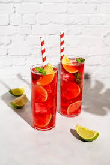

Ginger Hibiscus Sparkler

Bridge tipsy December and dry January with this less-leaded (but no-less-tasty) sipper.
Spicy ginger liqueur, nonalcoholic ginger beer, and sweet-tart hibiscus provide all the buzz you need.
By Juliana Hale
Ingredients
- ¼ cup dried hibiscus petals
- 1 ½ cups boiling water
- ½ cup fresh lime juice
- ½ cup ginger liqueur (such as Domaine de Canton®)
- ½ cup ginger beer
- 4 sprigs fresh mint for garnish
- fresh ginger, peeled and thinly sliced
Directions
- Steep hibiscus flowers in boiling water for 5 minutes; strain into a heatproof bowl set in a
bowl of ice to speed cooling. Cool completely.
- Transfer to a small pitcher. Stir in lime juice and ginger liqueur. Pour into ice-filled
Collins glasses (about 5 oz. per glass) and top each with 1 oz. ginger beer. Garnish with mint sprigs
and ginger slices.
Use This instead of That
You can use 8 hibiscus tea bags if you don't have hibiscus flowers. Just steep in boiling water for
5 minutes.
Using liqueur (instead of liquor) lets you amp up cocktails without making them overly potent.
Though often made with a rum or vodka base, liqueurs generally range from 15 percent to 55 percent
alcohol by volume. (Liquors usually start at 40 percent by volume.)